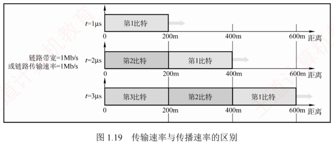

1.3 本章小结及疑难点
对应王道教材 1.3 节（教材 P28–P29）· 本章要点回顾与疑难辨析
本章要点回顾
- 概念主线：计算机网络 = 分散自治的计算机系统 + 通信设备与线路 + 完善的软件；由节点和链路组成；internet（通用名）≠ Internet（专有名词，须用 TCP/IP）。
- 组成与功能：组成上分硬件/软件/协议（协议是核心）、边缘部分/核心部分、通信子网/资源子网；功能上五大项——数据通信、资源共享、分布式处理、提高可靠性、负载均衡。
- 交换方式：电路交换（独占端到端物理通路，适合低频次、连续大量数据）→ 报文交换（整个报文存储转发）→ 分组交换（等长分组存储转发，时延更小、更灵活，适合突发式通信，是统考高频考点）。
- 性能指标：速率、带宽、吞吐量、时延（发送 + 传播 + 处理 + 排队）、时延带宽积、RTT、信道利用率；重点掌握发送时延 = 分组长度/发送速率、传播时延 = 信道长度/传播速率的计算。
- 体系结构：体系结构是抽象的（各层及其协议的集合），实现是具体的；协议是水平的（对等实体间）、服务是垂直的（下层经 SAP 向上层提供）；协议三要素为语法、语义、同步。
- 两大模型：OSI 七层（物、链、网、传、会、表、应）理论完整但复杂低效；TCP/IP 四层（网络接口、网际、传输、应用）是事实标准；学习常用融合二者优点的五层结构。IP 是互联网的核心协议（Everything over IP，IP over Everything）。
疑难点 1：互联网使用的 IP 是无连接的，因此其传输是不可靠的——为什么当初不把互联网的传输设计为可靠的？
传统电信网主要用于电话通信，而普通电话机是"哑终端"（不具备智能处理能力），因此电信公司必须将网络本身设计得高度可靠，以保障通信质量。
数据传输显然需要可靠性。但在设计 ARPAnet（互联网的前身）时，一个关键争论是"谁应该负责保证传输的可靠性？"一种观点认为，应像电信网那样，由通信网络本身确保可靠传输——毕竟当时的技术已能构建高可靠的网络；另一种观点则主张，由用户主机（端系统）来负责可靠性，理由是这样可以让网络结构更简单、成本更低、扩展性更强。
计算机网络的先驱们注意到，计算机与电话机有本质区别：计算机是智能终端，具备强大的处理能力。因此他们最终采纳了端到端可靠传输的设计哲学：在网络层使用简单的、无连接、不可靠的 IP 协议，而在传输层通过面向连接的 TCP 协议实现端到端的可靠性。这样既降低了网络基础设施的复杂性和成本，又确保了应用所需的可靠通信。
疑难点 2：端到端通信和点到点通信有什么区别？
本质上，由物理层、数据链路层和网络层构成的通信子网负责提供主机到主机的通信服务，而传输层则负责为主机上的应用进程提供端到端的通信服务。
- 点到点通信：指主机到主机之间的数据传递，不涉及具体的应用进程。它只负责将数据从一台主机传送到另一台主机，但无法识别是哪两个进程在通信——这一任务由更高层完成。
- 端到端通信：建立在点到点通信的基础之上，通过多段点到点链路串联，最终实现不同主机上应用进程之间的通信。这里的"端"指的是应用进程的端口，而端口号用于标识应用层中的不同进程。因此，端到端通信真正面向的是用户程序之间的交互，而不仅仅是机器之间的连接。
疑难点 3：如何理解传输速率和传播速率？
- 传输速率：指主机或路由器在数字信道上发送数据的速率，单位是比特/秒（b/s）。
- 传播速率：指电磁波在物理介质中向前传播的速度，单位是米/秒（m/s）。
例如，假定链路的传播速率为 \(2\times10^8\text{m/s}\)，即电磁波 1μs 可向前传播 200m；若链路带宽为 1Mb/s，则主机 1μs 可向链路发送 1 比特数据。结合图 1.19 观察：

- 在 \(t=0\) 时，开始发送数据；
- 到 \(t=1\text{μs}\) 时，第一个比特已沿链路传播约 200m；
- 到 \(t=2\text{μs}\) 时，第二个比特发出，第一个比特到达 400m 处；
- 到 \(t=3\text{μs}\) 时，第三个比特发出，第一个比特到达 600m 处。
📌 结论
链路上同时存在多少比特，取决于传输速率（带宽）；而每个比特在某一时刻位于何处，取决于传播速率。